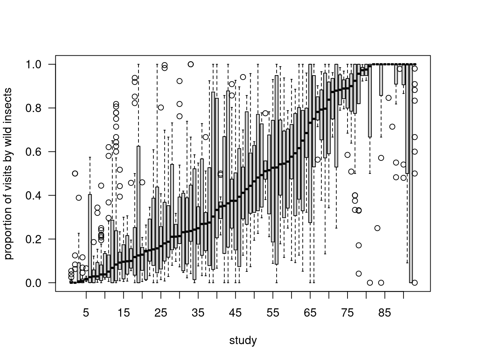
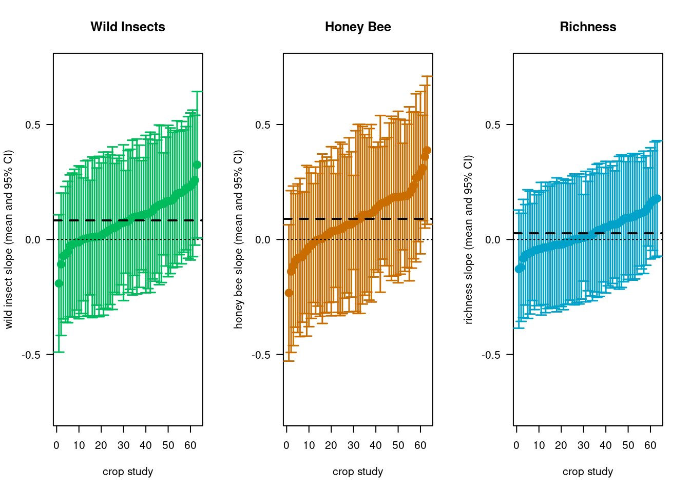
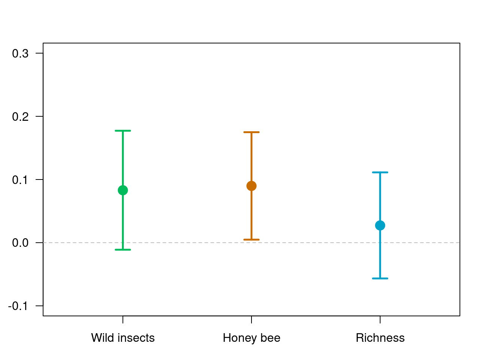
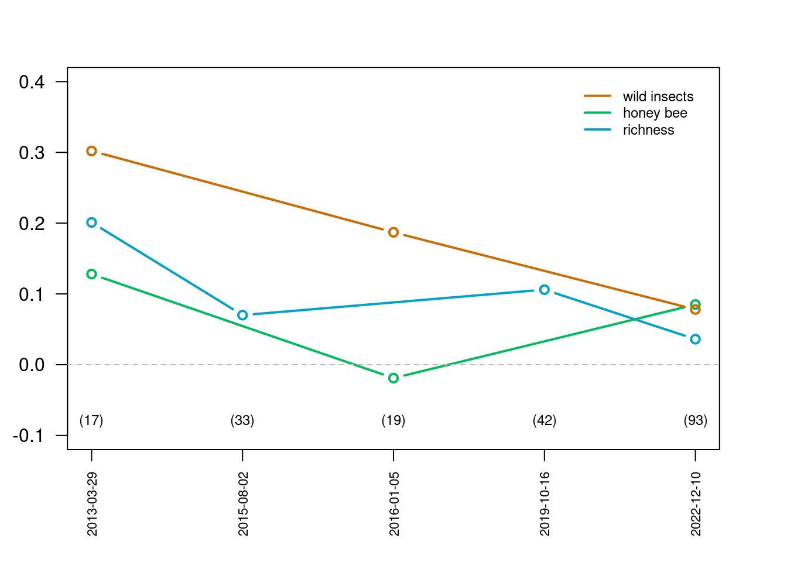

Pollinator contribution to crop yield
Results
1) What are the relative contributions of honey bees versus wild insects to crop visitation worldwide?
We observe a large variation in the relative contribution of honey bee visitation rates and other wild insects within and across crops. While some crops are solely visited by wild insects in some areas, others are mainly visited by honeybees.

Fig 1: This figure shows the proportion of total visits provided by wild insects (vs. honey bee) for each pollination study. In these boxplots, the bold center line is the median, the hollow boxes cover the interquartile range (IQR), and the whiskers extend to the most extreme points within 1.5*IQR from the median. If any points are more extreme than this, they are plotted as gray circles.
2) What are the relative contributions of honey bees versus wild insects to crop yield worldwide?
Similarly, we observe a large variation on the effect of pollinator richness, wild and honeybee visitation rates on crop yields, with an overall small, but positive effect size.

Fig 2: This figure shows the estimated means and 95% CIs for the effect of wild insects, honey bee, and species richness on crop yield for each pollination study. The dashed black line is the overall mean across all studies. Means were calculated using the random effect estimates from the full model.
3) Is the total number of flower visits by pollinators sufficient to predict crop yields, or is the diversity of pollinator species also important?
The mean wild insects estimate is 0.083, and the honeybee mean estimate is 0.089. Overall, species richness has a shallower positive effect on yield (pollinator richness estimate is 0.027)

Fig 3: This figure shows the current overall mean estimate (and 95% CIs) for the effect of wild insects, honey bees, and richness on crop yield. Estimates based on the CropPol database are generated using the full model as described in the methods.
4) How the relationships between pollinator visits, richness, and yield changed with the number of studies available?
Since the first synthesis papers, we found that the effect size tend to decrease as more studies are added to the analysis.

Fig 4: This figure shows the history of the estimated effects of wild insects, honey bees, and richness on crop yield over time. Literature estimates are drawn from Garibaldi et al. 2013, Garibaldi et al. 2015, Rader et al. 2016, and Dainesse et al. 2019. Estimates based on the CropPol database (year > 2022) are generated using the full model as described in methods. Sample size is indicated between brackets below each time period.